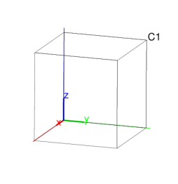
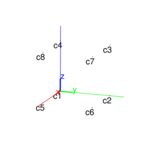
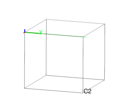
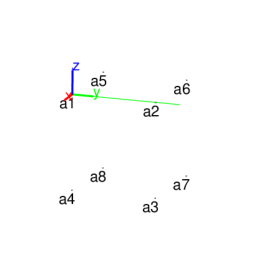

13.16.1 Cubes: cube
The cube command takes as arguments three points, A,
B and C.
cube returns and draws the following cube:
-
One edge is AB.
- One face is in the plane ABC, on the same side of
line AB as is C.
- The cube is on the side of plane ABC that makes the
points A, B and C counterclockwise.
Input:
C1 := cube([0,0,0],[0,4,0],[0,0,1])
Output:

Input:
c1,c2,c3,c4,c5,c6,c7,c8 := vertices(C1)
Output:

Input:
faces(C1)
Output:
[[[0,0,0],[0,4,0],[0,4,4],[0,0,4]],
[[4,0,0],[4,4,0],[4,4,4],[4,0,4]],
[[0,0,0],[4,0,0],[4,0,4],[0,0,4]],
[[0,0,0],[0,4,0],[4,4,0],[4,0,0]],
[[0,4,0],[0,4,4],[4,4,4],[4,4,0]],
[[0,0,4],[4,0,4],[4,4,4],[0,4,4]]]
Input:
C2 := cube([0,0,0],[0,4,0],[0,0,-1])
Output:

Input:
a1,a2,a3,a4,a5,a6,a7,a8 := vertices(C2)
Output:
